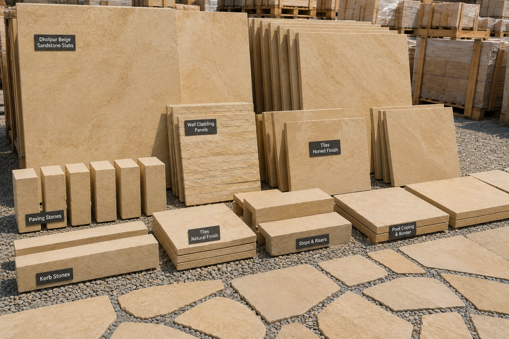
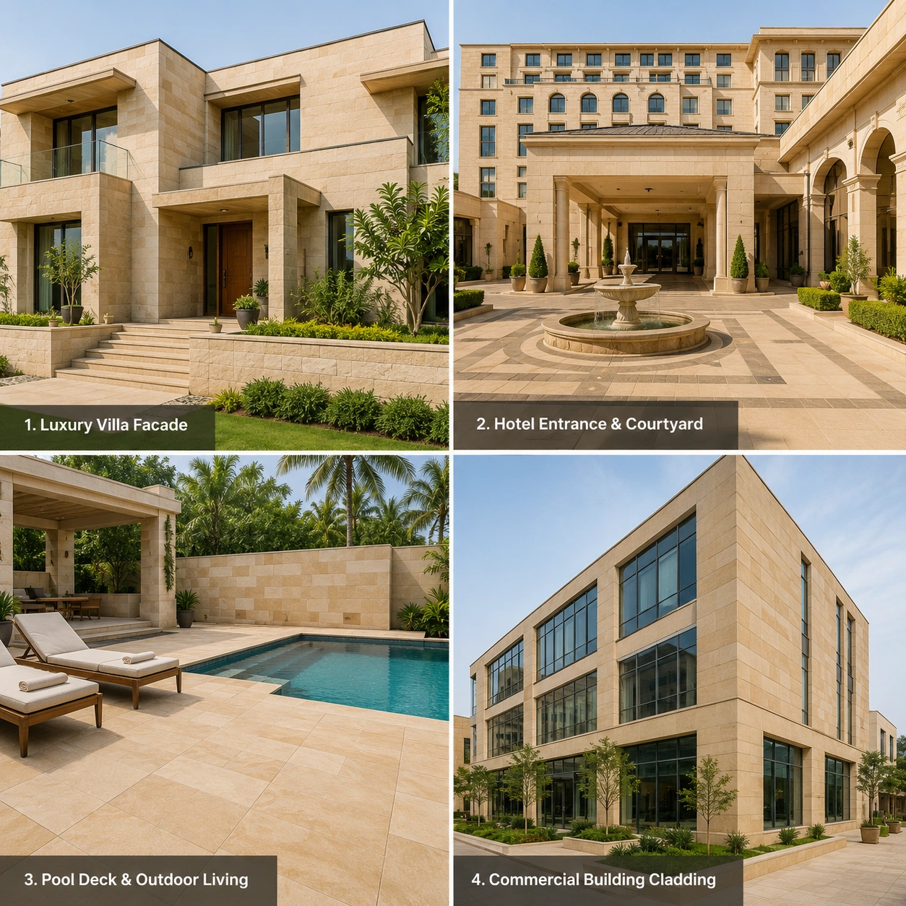
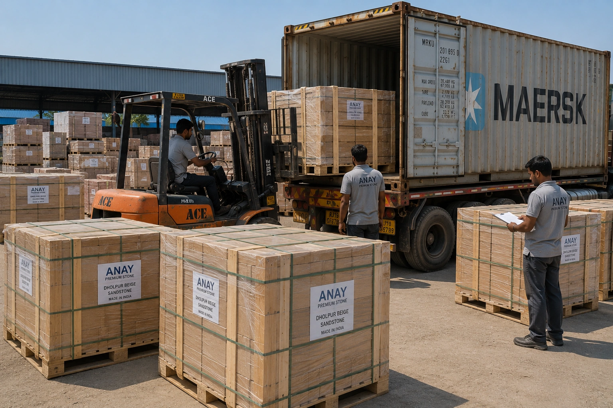
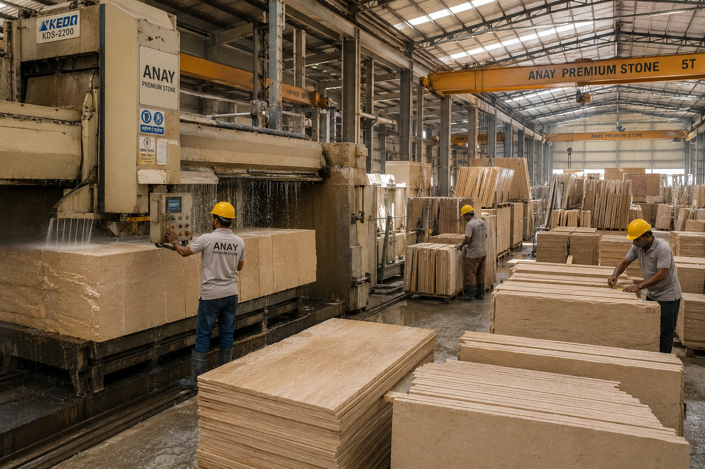

ANAY Premium Stone is a trusted Dholpur Beige Sandstone supplier providing premium sandstone products for architects, builders, landscape designers, distributors and international buyers. Known for its warm beige colour, fine grain texture and timeless appearance, Dholpur Beige Sandstone is widely used in luxury residential, hospitality and commercial projects worldwide.
Request a QuoteDholpur Beige Sandstone is one of India's most recognised natural building stones. Quarried in Rajasthan and valued for its elegant buff-beige colour, this sandstone combines natural beauty with excellent durability and architectural versatility.
Its subtle colour palette complements both contemporary and traditional architecture, making it a preferred choice for villas, hotels, resorts, commercial developments and landscape projects.
As a leading Dholpur Beige Sandstone supplier, ANAY Premium Stone provides consistent quality, dependable supply and professional support for projects of all sizes.

Dholpur Beige Sandstone offers an ideal combination of elegance, durability and functionality. Its neutral beige tones blend effortlessly with a wide range of architectural styles and landscape designs.
Whether used for paving, wall cladding, facades or architectural detailing, Dholpur Beige Sandstone provides a premium natural stone appearance that remains attractive for decades.
Its balance of aesthetics and performance continues to make Dholpur Beige Sandstone one of the most demanded sandstone products exported from India.
ANAY Premium Stone supplies Dholpur Beige Sandstone in a wide range of formats suitable for architectural, landscape and construction applications. Our products are manufactured according to project requirements and can be supplied for both domestic and international projects.
Whether the requirement is for a luxury residential development, hospitality project, commercial building or landscape architecture project, we provide premium Dholpur Beige Sandstone products with consistent quality and professional support.
These products are supplied to builders, architects, developers, landscape designers, distributors and importers worldwide.

Dholpur Beige Sandstone is highly versatile and can be used across a broad range of residential, commercial and landscape applications. Its warm neutral colour palette creates elegant spaces while maintaining the durability required for long-term performance.
The stone is frequently selected for premium projects where natural beauty, consistency and timeless architectural appeal are important design considerations.
Its natural elegance and practical performance make Dholpur Beige Sandstone one of the most widely specified sandstone products in modern architecture.

ANAY Premium Stone supplies Dholpur Beige Sandstone to customers throughout India and international markets. Our export-focused operations support builders, distributors, importers and procurement companies seeking reliable access to premium sandstone products.
We provide professional packaging, quality inspection and logistics support to ensure products arrive safely and meet customer expectations.
Our goal is to provide international buyers with dependable access to premium Dholpur Beige Sandstone sourced directly from Rajasthan, India.
We regularly supply Dholpur Beige Sandstone to architects, builders, distributors, importers and procurement companies seeking a reliable Dholpur Beige Sandstone supplier for long-term sourcing and project-based procurement.

ANAY Premium Stone combines access to premium sandstone resources with professional manufacturing capabilities. Our production processes focus on dimensional accuracy, quality consistency and efficient project execution.
From raw sandstone blocks to finished architectural products, every stage of production is carefully managed to maintain the quality standards expected by architects, builders and international buyers.
This manufacturing capability allows us to support both large-scale construction projects and specialised architectural requirements.
ANAY Premium Stone supplies Dholpur Beige Sandstone to a diverse range of customers across India and international markets. Our products are used in residential, hospitality, commercial and public infrastructure projects where quality and reliability are essential.
We work closely with customers seeking a dependable Dholpur Beige Sandstone supplier for long-term sourcing and project-based procurement requirements.
Dholpur Beige Sandstone is a premium natural sandstone quarried in Rajasthan, India. It is known for its warm beige colour, fine grain texture and suitability for both interior and exterior applications.
We supply slabs, tiles, paving stones, wall cladding, pool coping, kerbstones, steps, risers and custom architectural products.
Yes. Dholpur Beige Sandstone is widely used for paving, facades, landscape architecture and outdoor living spaces.
Yes. ANAY Premium Stone supplies Dholpur Beige Sandstone to international buyers and supports export logistics and packaging requirements.
Yes. We support wholesale distribution, project procurement and large-scale construction projects.
Yes. Products can be manufactured according to project specifications and architectural requirements.
It is widely used for villas, hotels, resorts, pool decks, wall cladding, courtyards, pathways and commercial developments.
Yes. Architects, builders and project developers can source Dholpur Beige Sandstone directly from ANAY Premium Stone.
Its elegant appearance, durability, versatility and timeless architectural appeal make it one of India's most sought-after natural stones.
Yes. Dholpur Beige Sandstone is widely used in luxury villas, resorts, hotels and premium residential developments because of its elegant appearance and long-term durability.
Simply contact ANAY Premium Stone with your project requirements and we will provide pricing and supply information.
Looking for a reliable Dholpur Beige Sandstone supplier? Contact ANAY Premium Stone for pricing, technical specifications, samples, project support and bulk supply requirements.
✓ Premium Quality Dholpur Beige Sandstone
✓ Bulk Supply Available
✓ Export Grade Packaging
✓ Custom Sizes & Finishes
Email: anaypremiumstone@gmail.com
Phone / WhatsApp: +91 772865515
Location: Sarmathura, Dholpur, Rajasthan, India